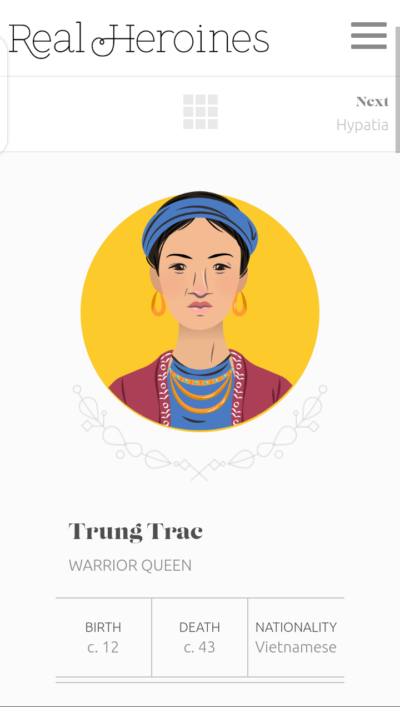

Fitt's Law
Mbiri Skincare

On this website, you can see how the fitt's law was used. There is a button on the bottom of the screen, which is really easy to reach with the finger and it is also big enough to see and not to miss it.
PARC: Repetition
JaydneEdwards Website

In this example, you can see how the repetition was used. The font and sizes are the same as you go through it. Also, the paragraph headers used on the web page are in the same style with same font.
White Space and Clean Design
Real Heroines
This realheroines website is an example of how whitespace and Clean Design. The website background is complete white and the graphics and paragraphs were professionally placed in such a way that gives beauty to the views.